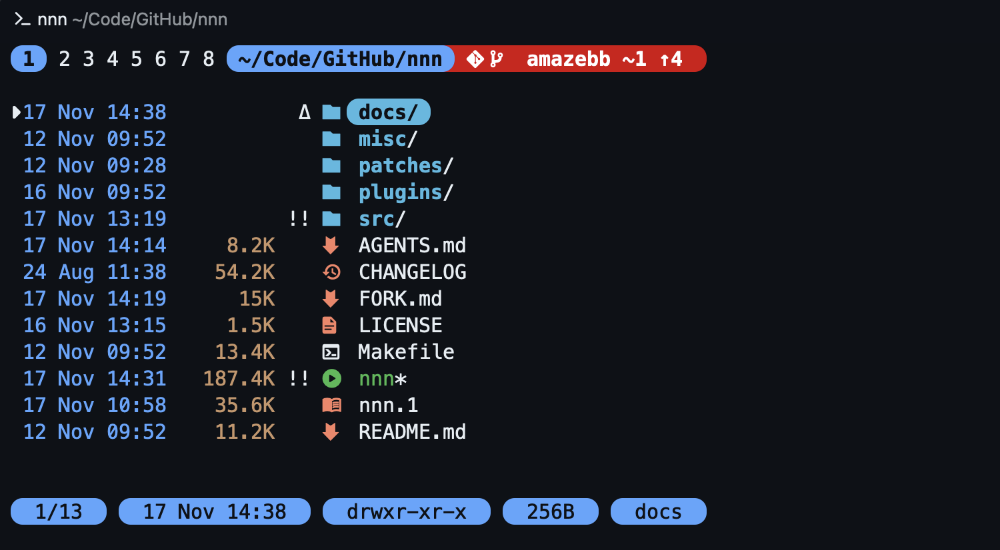

n3: nnn, with a fin3r finish.
nnn is a fast, lightweight terminal file manager. This fork keeps everything upstream does and adds a polished interface: rounded pills, floating popups, git status. Everything else, such as image and video previews, is a plugin, and nnn’s plugin system lets you write or customise your own.


What's new
Every change is a small, optional layer on top of upstream nnn. Switch any of it off with a flag or an environment variable.
A modern look
Small touches that make the listing easier to scan. The hover highlight, status-line segments,
the context number, the whole top-line path (followed by the git branch) and every message are
drawn as
rounded pills, and a triangle marks the hovered entry. Turn the pills off with NNN_PILL=0. See
manual.
Choice prompts
Prompts with options show one pill per choice. The default is filled, the key to press is
capitalised and underlined, and a final Esc pill shows that any other key cancels.
See manual.
Floating windows
Help, file stats and confirmations open in rounded, titled popups that fit their content, with pill key hints along the bottom. See manual.
Delete confirmation
Deleting one file ends the prompt with [y/n]. With a selection, the files are listed
in a popup, relative to where you are, before you confirm with y. See manual.
Git status
A status column built into nnn, not a patch. -G turns
it on, i toggles it live, and it only appears when the repo has changes. It also
works with a bare dotfiles repo at ~/.dotfiles when you are in your
$HOME folder.
Readable timestamps
Compact eza style, US style, or eza with the weekday for today's files, (-y / -Y /
-Z). Press y to cycle them in a running
session.
Recently changed files get a clock icon NNN_YOUNG.
Quieter detail view
Hide directory sizes with -I and octal permissions with
-m, or toggle them with I and M.
Time and size columns have their own colors in NNN_FCOLORS.
Updated preview plugin
The bundled preview-tui
plugin is updated to work with newer terminals: native
splits in Ghostty 1.3+ and Rex, images through chafa or viu with an EXIF caption underneath, and
embedded JPEG previews for camera RAW files.
Everyday conveniences
Quick Look the hovered file with ;;, copy names or paths to the clipboard, set and reverse sort keys, and more. See all the keys.
Keys
New keys this fork adds. Everything else works as upstream. The Section column is the heading each key has in the ? help. See manual.
| Key | Section | Action |
|---|---|---|
| i | Display | Toggle the git status column on/off (same as the -G option; reloads the directory) |
| M | Display | Toggle octal permissions in detail mode (same as -m) |
| y | Display | Cycle the detail timestamp format: ISO, eza (-y), US (-Y), eza + today (-Z), back to ISO |
| I | Display | Toggle directory sizes in detail mode (same as the -I option) |
| C / Ctrl+B | Files | Copy file name(s) / full path(s) of the selection, else the hovered entry, to the system
clipboard (pbcopy;
wl-copy/xclip/xsel elsewhere), newline separated.
Ctrl+G (lowercase g; or Ctrl+Y where the tty delivers it) in
any prompt (e.g. n) pastes the first copied entry.
|
| ;; | Files | macOS Quick Look of the hovered file (qlmanage -p), raised in front of the
terminal. First use may prompt for Automation permission (System Events). |
Changed behavior of existing keys
| Key | Change |
|---|---|
| t then t / s / e | Sets that sort key instead of toggling it off |
| t then T / S / E | Sets that sort key reversed |
| t then c | Resets to the default sort order |
| p / v with nothing selected | Floating help; Enter opens the editor, q/Esc cancels |
| f popup, j n / k p | Listing highlight follows the hovered file |
Options
Flags and environment variables. Add the letters to NNN_OPTS to make them permanent.
| Setting | Effect |
|---|---|
-G |
Query git and show the status column |
-y -Y -Z |
Compact eza, US, or eza-with-weekday timestamps (the last one wins) |
-I -m |
Hide directory sizes, hide octal permissions |
NNN_PILL=0 |
Turn off the rounded caps |
NNN_GITBRANCH=0 |
Hide the git branch segment after the path in the top line |
NNN_MSGCOLOR |
Message pill color, 0 to 255 |
NNN_YOUNG |
Style for recent files: icon, reverse, pill or
none
|
NNN_HOVERMARK |
Hovered entry marker: triangle, 1 for >,
0 for none
|
Install
Build from source. The pills need a Nerd Font in your terminal; without O_NERD
the interface falls back to plain characters.
Requirements
make deploy builds from source. It needs make, a C11 compiler,
git, the ncurses headers and a Nerd Font for the glyphs. On macOS the Command Line Tools
cover everything but the font:
xcode-select --install
brew install font-symbols-only-nerd-font
What make deploy needs
| Tool | Used for |
|---|---|
make |
runs the build |
C compiler (cc, C11) |
builds src/nnn.c |
grep, cut |
read the version string from src/nnn.c |
ncurses with headers (pkg-config optional) |
linking; without pkg-config the Makefile falls back to
-lncurses
|
pthread |
linked in; part of the system libc |
install |
copies the binary, nnn.1 and the zsh completion |
cp |
keeps the previous binary as nnn.bak |
Build
# clone the repo
git clone -b amazebb https://github.com/amazebb/nnn.git
cd nnn
# build with Nerd Font support and install to ~/.local/bin
make deploy
# install the plugins, including the previews
rsync -a plugins/ ~/.config/nnn/plugins/
nnn -V should report 5.3-amazebb. The binary goes to
~/.local/bin/nnn with the previous copy kept as nnn.bak, so make sure that
folder is on your PATH.
Manual
The full reference is the nnn(1) man page.